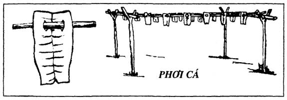
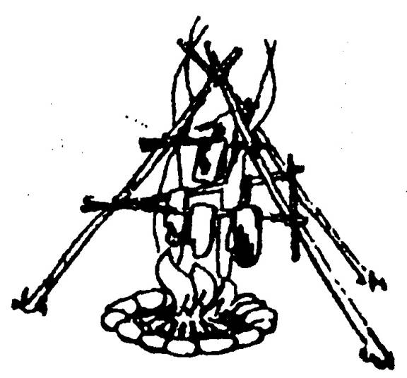
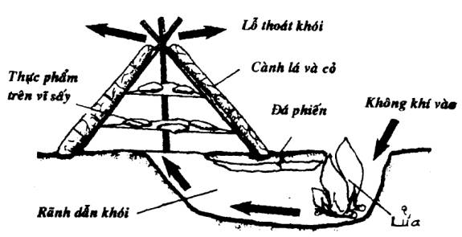
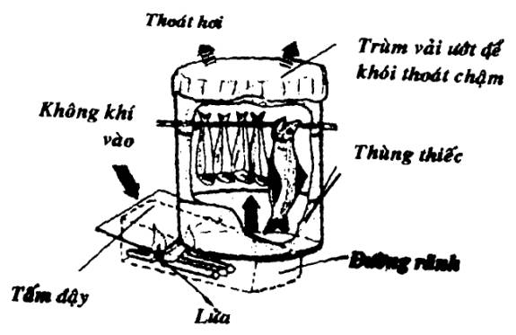
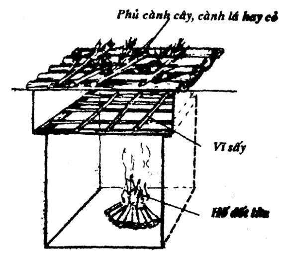
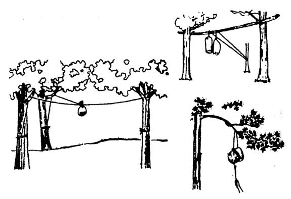
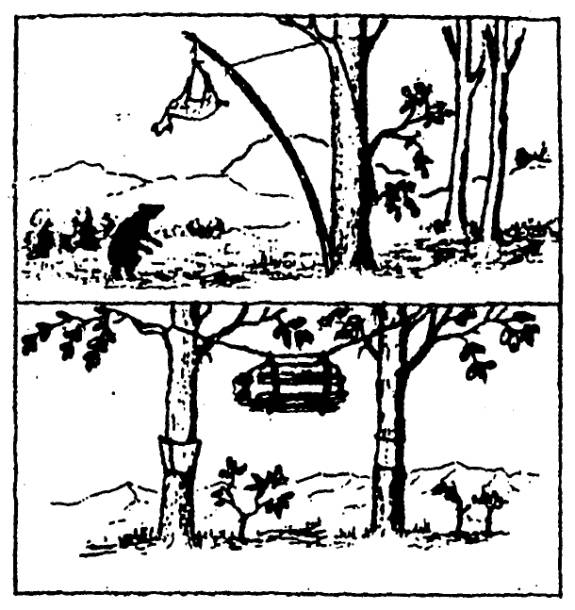
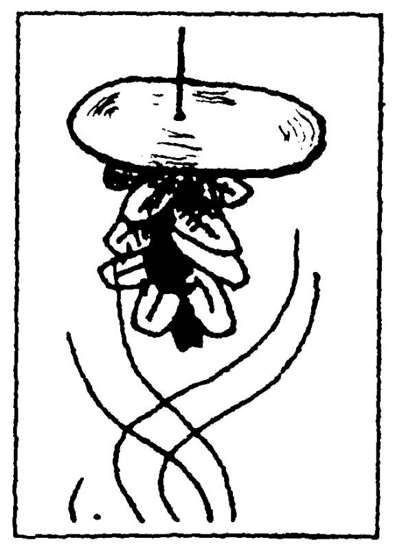
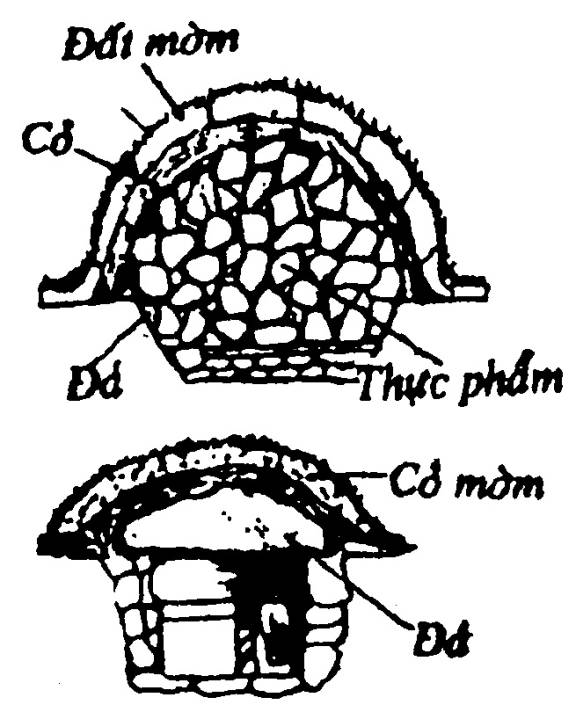
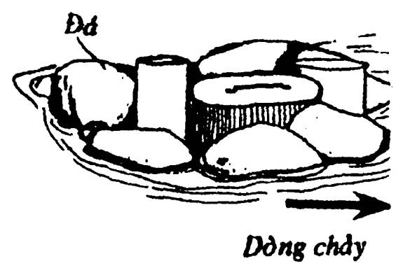

Trong những ngày may mắn, các bạn đánh được rất nhiều chim, thú, cá... Thu nhặt được nhiều rau quả, không thể ăn hết, các bạn phải biết cách bảo quản và dự trữ, để dành cho những ngày mưa gió hay xui xẻo không có gì. Đây là một điều rất quan trọng khi các bạn phải sống nơi hoang dã.
MUỐI HAY LÀM MẮM
Thịt:
- Cắt thịt sống thành từng miếng bằng bàn tay, đem ram hoặc luộc chín. Xong đem ngâm ngập vào nước mắm (nếu có) hay nước muối đun sôi để nguội. Cách này có thể để lâu 1-2 tháng.
- Cắt thành từng miếng mỏng, xát muối cho thấm rồi đem nhận vào thùng hay hũ, nén cho thật chặt, để nơi thoáng mát, thỉnh thoảng đem phơi nắng, không được để cho nước mưa rơi vào. Cách này giữ được rất lâu.
- Nếu có mật ong, các bạn ngâm thịt vào trong đó, có thể giữ được 4-5 tháng mà vẫn tươi ngon.
Cá:
Cá làm sạch, để ráo nước, xát muối cho thấm rồi đem nhận vào thùng hay hũ, khạp... nén cho thật chặt, để nơi thoáng mát, thỉnh thoảng nên đem ra phơi nắng, tuyệt đối không được để cho nước mưa rơi vào (Muốn lấy nước mắm thì các bạn phải khui một lỗ lù phía dưới đáy. Sau khi tháo ra đổ vào vài lần, các bạn ủ và để ngoài nắng ít nhất là 6 tháng thì nước mắm mới tạm ăn được) (thường thì phải một năm)
PHƠI KHÔ
Thịt:
Thái mỏng, dùng dao to bản hay một miếng gỗ đập dẹp. Ướp muối, đường (nếu có), nước cốt củ riềng (nếu có). Rồi đem phơi trên một tấm phên hay lưới, hoặc treo dài theo những sợi dây. Nếu phơi trên một phiến đá thì phải trở thường xuyên.
Cá:
Mổ bụng, làm sạch, lạng phi lê hay banh mỏng, ép dẹp, nhúng nước muối (nếu có) rồi đem phơi trên tấm phên tre hay lưới, hoặc lấy dây hay cây xỏ xâu đem treo hay gác lên giàn, phải nhớ lật trở hàng ngày.

SẤY KHÔ
Phương pháp này dành cho những ngày có thời tiết xấu hay các bạn đang ở trong vùng ít khi có nắng.
Cá hoặc thịt sau khi đã xử lý như cách làm để phơi. Các bạn đan một tấm phên thưa, gác cao trên lửa khoảng 1 mét. Trải thịt hay cá lên trên tấm phên. Đốt lửa cho cháy nho nhỏ suốt ngày đêm (có lửa than càng tốt), thỉnh thoảng nên lật trở cho đến khi khô hẳn.
Nếu không có vật liệu để đan phên, các bạn có thể dùng tre hay những cành cây nhỏ, dài khoảng 1.5-2 mét, làm thành một cái giàn sấy hình kim tự tháp, trên đó làm những khung ngang để vắt những miếng thịt hay cá.

HUN KHÓI
Hun khói lạnh:
Khói rất hiệu quả trong việc bảo quản thực phẩm (thịt hay cá tươi). Các bạn chọn một vị trí có đất mềm rồi đào một cái rãnh dẫn khói rộng chừng 0.45, dài 2 m, gác qua rãnh vài phiến đá (hay cây tươi) rồi phủ đất. Dựng một khung hình nón cao chừng 1.5 m, chung quanh phủ cành cây và cỏ thật dày. Ở giữa gác những tấm vỉ để đựng thịt hay cá. Đốt lửa đầu miệng rãnh liên tục khoảng 10 giờ là được.

Hun khói nóng:
Gọi như thế vì phương pháp này thực phẩm được hun trực tiếp gần ngọn lửa, chủ yếu là sử dụng hơi nóng nhiều hơn. Khi dùng phương pháp này (cũng như các phương pháp sấy khô khác), xin các bạn lưu ý: Không sử dụng những cây củi thuộc họ tùng bách để đốt lửa, vì khói đen sẽ phủ một lớp dày lên thực phẩm, không ăn được.
Nên sử dụng gỗ của các loại cây hồ đào, anh đào, tần bì, sồi, ổi, bằng lăng, ngành ngạnh... nếu củi quá khô, nên ngâm nước vài giờ trước khi đốt (để tạo khói). Thực phẩm sau khi hun nóng thì có thể sử dụng trực tiếp mà không cần qua chế biến.
Để hun khói nóng, các bạn có thể đào một cái hố dưới đất hay sử dụng một cái thùng bằng thiếc theo các hình minh họa bên đây.


BẢO VỆ THỰC PHẨM
Thực phẩm sau khi đã xử lý cần tồn trữ, thức ăn còn thừa để dành cho hôm sau... Các bạn phải biết cách bảo vệ cho khỏi bị chuột bọ, côn trùng, thú hoang... làm hỏng hay ăn mất.
Treo trên cây:
Ở những vùng có nhiều thú hoang, nhất là gấu, chó rừng... Nếu trời không mưa, các bạn nên bỏ thực phẩm vào trong bao rồi treo lên cao, ngoài tầm với của thú (khoảng 2-3 mét). Dây treo nếu có thể thì nên tẩm dầu hôi hay thuốc muỗi để chống kiến.

Trường hợp các bạn săn bắt được thú rừng mà chưa kịp ra thịt, thì các bạn cũng nên mổ bụng móc hết lòng ruột rồi cũng treo cao lên.

Treo giàn khói:
Đây là một phương pháp rất phổ biến ở nông thôn Việt Nam. Nếu các bạn đã có một chỗ ở và một bếp ăn cố định thì nên lấy dây để xâu những loại thực phẩm đã xử lý (phơi hay sấy khô) treo lên trên giàn khói, sẽ bảo quản được rất lâu mà không sợ bị côn trùng hay thời tiết làm hư hỏng. (Nên xâu qua một tấm thiếc, miếng gỗ, vỏ cây... để chống chuột bọ).

Chôn dưới đất:
Những thực phẩm có nguồn gốc thực vật như các loại trái, củ, hạt, rau cải... Các bạn nên đào một cái hố dưới đất, xếp đá chung quanh, bỏ thực phẩm vào giữa. Sau đó dùng rơm rạ, cỏ khô... phủ lên, rồi đắp đất bên ngoài.
Các bạn cũng có thể tồn trữ các loại thực phẩm khác ở dưới hố đá này, nhưng phải bỏ vào bao hay đồ chứa, rồi dằn đá lớn lên trên (để cho thú không đào được) trước khi lấp đất lại.

Làm lạnh thực phẩm:
Nếu ở trong vùng nhiệt đới, gặp lúc thời tiết nóng nực, thức ăn thừa để đến ngày hôm sau rất dễ bị hỏng cho dù các bạn đã hâm kỹ. Các bạn nên làm như sau:
Đem thực phẩm đựng trong nồi hay bao bì không thấm nước, bỏ xuống một dòng suối có nước nông và chảy yếu, lấy đá lớn lèn chung quanh và dằn đè lên để không bị trôi mất. Nước suối làm cho thức ăn được mát lạnh và không bị hư hỏng. Cách này cũng làm cho kiến không vào thức ăn được.
